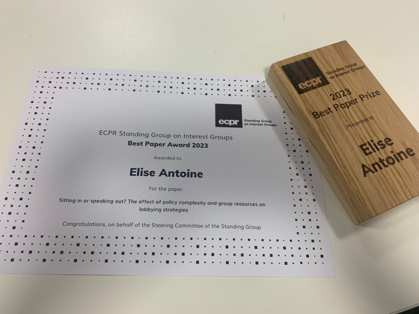

Antoine, E. (2026). Who's behind the wheel? Assessing internet regulatory agencies' autonomy from corporate interests. Internet Policy Review, 15(1). https://doi.org/10.14763/2026.1.2088Abstract
Global agencies such as the Internet Corporation for Assigned Names and Numbers (ICANN), the Internet Engineering Task Force (IETF), and the World Wide Web Consortium (W3C) play a central role in internet governance, developing the rules, guidelines, and procedures that shape both the functioning of the internet as a network and its broader use. Major technology firms and network infrastructure providers, such as Google, Cisco, and Microsoft, whose products both depend on and implement these rules, have strong incentives to participate in these venues. This paper examines which combinations of factors contribute to agencies' informal autonomy from corporate interests. Using a Qualitative Comparative Analysis supplemented by eleven interviews with senior officials, it finds that no single factor determines autonomy. Instead, informal autonomy results from specific configurations of four elements: the strength of formal rules supporting autonomy, the agency's age, the complexity of its policy domain, and the degree of media attention it receives. These findings provide a more nuanced understanding of when autonomy is favoured or constrained, raising important questions about the legitimacy of key agencies involved in internet governance, whose decisions can shape both individual rights and market structures.

ECPR Best Paper Award, 2023
Antoine, E. (2024). Lobbying global venues: sitting in or speaking out? Governance, 1-20. http://doi.org/10.1111/gove.12903ECPR Standing Group on Interest Groups Annual Best Paper AwardAbstract
Understanding interest groups' participation in global policy processes is critical not least because of an increasing shift in policy-making powers to global institutions. This paper contributes to existing research by examining advocacy efforts at the global level and proposing a novel argument linking the degree of policy complexity and the amount of groups' resources to lobbying strategies. Specifically, it argues that interest groups invest in both inside ('sitting in') and outside ('speaking up') lobbying strategies when the policy at stake is complex and they have more resources. This theory is tested using extensive and novel data spanning interest groups' lobbying efforts on global internet privacy regulation.
Antoine, E. (2023). The politicisation of internet privacy regulation. European Journal of Political Research, 62, 530-550. https://doi.org/10.1111/1475-6765.12562Abstract
Despite a rich body of literature on politicisation, knowledge of this process and its driving forces remains limited. Specifically, little empirical analysis has been carried out to assess the impact of focusing events on politicisation within global and seemingly technical venues of policy-making. Building on existing studies, I conceptualise politicisation as a combination of three components: (1) issue salience, (2) actor expansion and (3) actor diversity. I test the impact of focusing events on the politicisation of one of the most pressing global policy issues of our age: internet regulation, specifically regarding global data protection and internet privacy rules. I use a systematic analysis of news media coverage over a 20-year period, resulting in an original dataset of 2,100 news articles. Controlling for different factors, my findings reveal that focusing events do contribute to politicisation in technical venues, in particular regarding the actors involved in debates.
Antoine, E., Atikcan, O., Chalmers, A. (2023). Politicisation, Business Lobbying, and the Design of Preferential Trade Agreements. Journal of European Public Policy, 31:1, 239–268. https://doi.org/10.1080/13501763.2023.2218413Abstract
Our paper addresses the question of how governments respond to the politicisation of preferential trade agreements (PTA). How have governments responded to business interest mobilisation while negotiating PTAs? Moreover, if there has been an increase in the salience of a trade agreement, has this changed the government response? First, we assess politicisation in terms of the mobilisation patterns of private sector interests during PTA negotiations. Our central argument is that governments liberalise more when a broad range of business interests involving a large number of sectors mobilise in response to trade negotiations, as this would provide legitimacy to their policy positions. Second, we study governments' reactions to the level of salience of the trade agreement at hand. We argue that governments liberalise less when the agreement in question is highly salient and provokes increased public debate. We take an actor-centred and comparative approach to our research questions and use a novel dataset of 157 PTAs covering the period from 2005 to 2018. Both of our hypotheses are supported by our analysis. Our results also reveal an important difference between PTA 'depth' and 'rigidity', which are often perceived as closely correlated in assessing trade openness.
Antoine, E., Chalmers, A.W. (2022). Interest Groups and Social Media. In: Harris, P., Bitonti, A., Fleisher, C.S., Binderkrantz, A.S. (eds) The Palgrave Encyclopedia of Interest Groups, Lobbying and Public Affairs. Palgrave Macmillan, Cham. https://doi.org/10.1007/978-3-030-44556-0_229
Antoine, E. (2022). Book review: David Coen, Alexander Katsaitis & Matia Vannoni, Business Lobbying in the European Union. International Review of Public Policy. https://doi.org/10.4000/irpp.2415
Under review and in preparation
The (Un)heavenly Virtual Chorus: The Double-Edged Sword of Digital Advocacy (with Anne Rasmussen, Andreu Casas and Tobias Heide-Jørgensen).
Managing Uncertainty through Revolving Doors: Evidence from Global Board Appointment (with Matia Vannoni).
Giving AI Policy Teeth: an Examination of AI Governance Substance.
Supported by British Academy/Leverhulme Small Research Grant (£10,000)
Speaking on whose behalf? How Interest Groups Frame Representation Online (with Tom Barton, Anne Rasmussen and Lise Rødland).
Received the ECPR Standing Group on Interest Group Best Paper Award (2025)
Research affiliate
Advocacy in Digital Democracy (ADVODID), led by Anne Rasmussen.
Past and upcoming presentations
APSA Annual Meeting 2026, Boston.
"Political (Interest) Representation." Money in Politics Seminar, University of Copenhagen & CBS, 2025.
ECPR General Conference 2025, Aristotle University of Thessaloniki.
IPSA World Congress 2025, Seoul.
ECPR General Conference 2024, University College Dublin.
12th Biennial Conference of the ECPR Standing Group on the European Union 2024, Lisbon.
ECPR General Conference 2023, Charles University.
80th Annual Midwest Political Science Association Conference 2023, Chicago.
ECPR General Conference 2022, University of Innsbruck.